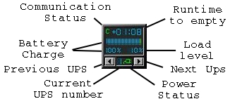
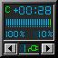
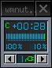
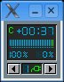

Description
WMNut is a program to monitor multiple UPSs statistics through the NUT (Network UPS Tools) framework on Linux and other systems.
It is a dockapp that is supported natively by X window managers such as Window Maker, AfterStep, BlackBox, FluxBox, and Enlightenment.
WMNut will run as a simple 64*64 pixels window in other Window Managers, or when using -w.

WMNut provides multiple UPSs monitoring with:
-
Status of power supply (battery or AC Power),
-
Communication status with UPS (Red/Green "C"),
-
Percentage of battery remaining (numeric and meter),
-
Load level percentage on output (numeric, if available),
-
Runtime to empty, ie time left to battery depletion (MM:SS),
-
High/Low/Critical battery status (Red/Yellow/Green colored meter and battery).
It is known to run on GNU/Linux and FreeBSD, but should also run on any other system supporting X11.
Download
Note that you can also access to old and testing WMNut releases.
Installation instructions
Requirements
WMNUT requires the:
-
X Window client and Xpm libraries and development files,
-
NUT client library, version 2.2.1 or higher.
In order to compile WMNUT using the Makefile, GNU make must be used. For FreeBSD users, the default BSD make does not work, so use gmake instead!
Installation
1) Download WMNut source code (from github) or archive (.tar.gz or .tar.bz2)
Either get file from WMNut downloads or clone the git repository using:
$ git clone git://github.com/aquette/wmnut.git2) Uncompress the archive (not needed for github source code)
$ tar -zxvf wmnut-X.YZ.tar.gz
$ tar -jxvf wmnut-X.YZ.tar.bz23) Switch to WMNut source code directory
$ cd wmnut-X.YZIf you are using the git source code, use:
$ cd wmnut4) Prepare the source for building
|
Note
|
when using the git repository, be sure to first call: |
Just call the usual:
$ ./configure|
Note
|
WMNut now uses pkg-config to determine the location of NUT library and headers. |
5) Now compile WMNut
$ makeOr (for *BSD systems):
$ gmake6) And install it on your system
Use the following command, as root:
$ make installOr simply copy the wmnut binary (and optionally its manual page) to the right directories on your system.
7) Optionally, configure WMNut for your own use
WMNut will automatically connect to any local device(s). So if you have remote system(s) that you want to monitor, edit and adapt wmnutrc. Then copy it to your home or / and your /etc directory, using:
$ cp wmnutrc /etc/wmnutrcor / and:
$ cp wmnutrc ~/.wmnutrc|
Note
|
|
8) Launch WMNut
$ wmnut &You can also use wmnut -h for help, or man wmnut to access the manual page.
If no parameter is given, wmnut will try to access the UPS at "localhost" address. Otherwise try wmnut -U upsname@hostname or edit your wmnutrc files.
Be sure to read the HINTS and TODO files too!
Copyright and license
WMNut is Copyright © 2002 - 2016 Arnaud Quette
wmnut is free software; you can redistribute it and/or modify it under the terms of the GNU General Public License as published by the Free Software Foundation; either version 2 of the License, or (at your option) any later version.
This program is distributed in the hope that it will be useful, but WITHOUT ANY WARRANTY; without even the implied warranty of MERCHANTABILITY or FITNESS FOR A PARTICULAR PURPOSE. See the GNU General Public License for more details.
You should have received a copy of the GNU General Public License along with this program; if not, write to the Free Software Foundation, Inc., 59 Temple Place, Suite 330, Boston, MA 02111-1307 USA
Credits
WMNut is based on wmapm originally written by Chris D. Faulhaber and M.G. Henderson.
Huge thanks to:
-
Russell Kroll for having initiated and driven the NUT project (Network UPS Tools), until 2004. Note that I have however taken over NUT leadership since 2005…
-
Bill Richter, Laszlo Hazy and David Butts for their support in beta test and improvement of WMNut,
-
Martijm Pieterse and Antoine Nulle for a great (and somewhat standardised) interface which I used as a template (wmmon.app and wmgeneral),
-
Luca Filipozzi for WMNut Debian package creation, which I now personaly hold, available at Debian website.
Help
I’m interested in having feedback about how WMNut runs on other platforms (BSD, Solaris, …) and searching for packagers on those platforms.
If you have nice suggestions, ideas, whatever, that aren’t on TODO list, feel free to mail them to me. Comments and remarks are also welcomed (Arnaud Quette).
FAQ
(How) Does WMNut support multiple UPS monitoring?
Yes, WMNut can monitor up to 9 UPSs since release 0.1. Take a look at HINTS file and manual page for more details about using this feature.
Can I set the initial size of WMNut?
No, WMNut is limited to 64*64.
I’m not running WindowMaker nor AfterStep. How can I run WMNut in windowed mode (ie not having transparent background !)?
Try running "wmnut -w". See below for a screenshot.
I can’t compile WMNut ("undefined reference to ‘upslogx’", "upsfetch.h/o not found" or "upsclient.h/o not found") or WMNut doesn’t work!
There is always lots of improvements in both NUT and WMNut… To solve your problem, you should upgrade to the most current release of NUT and WMNut, and the problem should disappear.
Screenshots
Withdrawn mode

Windowed mode (-w)

Windowed mode (-w) under KDE (Plastik)
